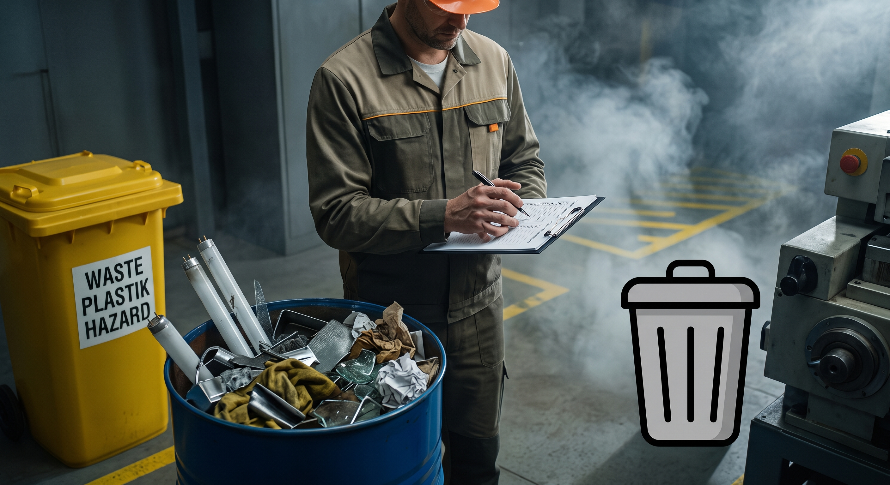
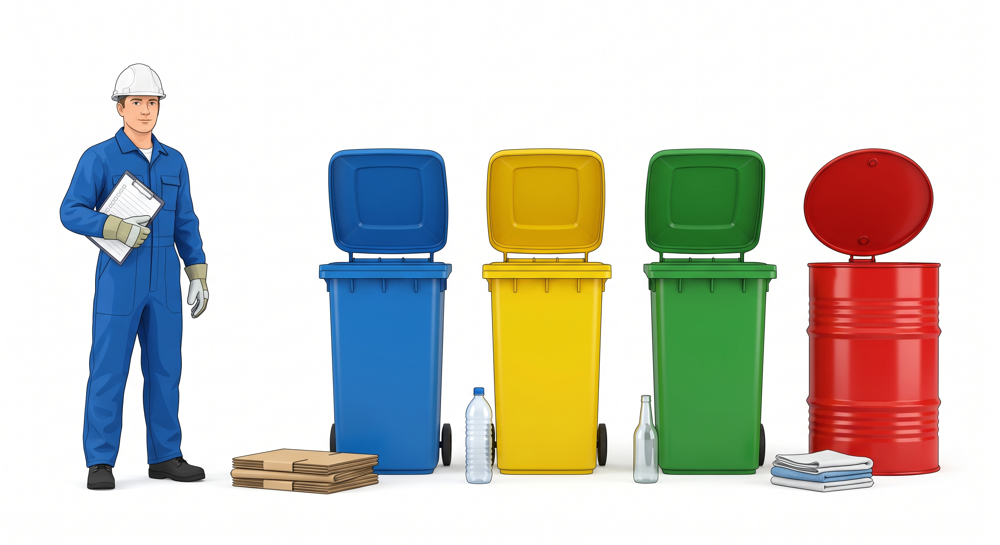

Кликайте прямо по объектам на плакате стажёра, чтобы открыть чат проверки и разобрать ошибки.
Протокол экспертизыНайдено ошибок: 0 / 5

💬
Экспертиза зоны
Какой фрагмент запроса стажёра привёл к этому браку?
🎉 Экспертиза завершена: Дело № 404 закрыто
Все 5 дефектов устранены. Ниже представлена эталонная графическая основа:

Ключевые правила для цеховой графики:
Чистая графика без букв: на эталонном изображении намеренно нет текста. Нейросети создают только чистую визуальную основу, а регламентные названия и правила добавляются вручную в PowerPoint за 2 минуты.
Изолированный белый фон: макет готов к печати на обычном принтере, не расходует лишний тонер и не размокает от заливки.
1 бак = 1 отход: отходы размещены рядом по отдельности, а не сброшены в кучу в одну бочку.
Единый визуальный стиль: аккуратный 3D-стиль для всех элементов без смешения фото и клипарта.
Технический свет: заливающее освещение без затемненных зон и тумана.
Эталонный промпт для плаката
Промпт составлен по правилам модульной производственной инфографики:
Профессиональный модульный информационный плакат по раздельному накоплению отходов для размещения в цехе, горизонтальный формат 16:9. Чистый белый изолированный фон, минимализм, без интерьера, стен и теней. В ряд расположены три одинаковых современных пластиковых контейнера с открытыми крышками: синий, желтый и зеленый. Рядом стоит отдельная красная металлическая емкость с плотно закрывающейся крышкой для промасленной ветоши. Все емкости чистые, без надписей, цифр, логотипов и маркировки. На корпусах оставлено свободное место для ручного добавления этикеток. Рядом с пластиковыми контейнерами лежат стопка чистой бумаги, чистая пластиковая бутылка и стеклянная тара. Рядом с металлической емкостью лежит сложенная темная техническая ветошь с небольшими следами масла. Слева работник цеха в спецодежде и каске кладет ветошь в металлическую емкость. Яркий равномерный технический свет, высокая четкость, единый стиль аккуратной технической 3D-иллюстрации. В верхней части оставлено широкое свободное поле для заголовка и правил.